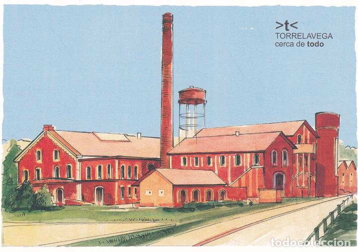

TORRELAVEGA |
|
|
La vieja chimenea de La Lechera, que ha sido noticia esta semana porque amenaza con nuevos desprendimientos (cascotes y una abrazadera rota) por falta de mantenimiento, ha superado no pocas vicisitudes a lo largo de su ya dilatada historia. Tras la pérdida de las últimas colonias en 1898, especialmente Cuba, en España se pusieron en marcha numerosas fábricas de azúcar de remolacha. Así surgió la de La Lechera, que se inauguró en diciembre de 1899, convirtiéndose en una de las grandes industrias de Torrelavega con su emblemática chimenea de más de 50 metros de altura. El historiador local José Ortiz Sal recuerda que la Azucarera Montañesa, que así se llamaba la sociedad, contaba entre sus miembros fundadores con José María González Trevilla, entonces alcalde de Santander con diversos intereses empresariales en Torrelavega. |
|